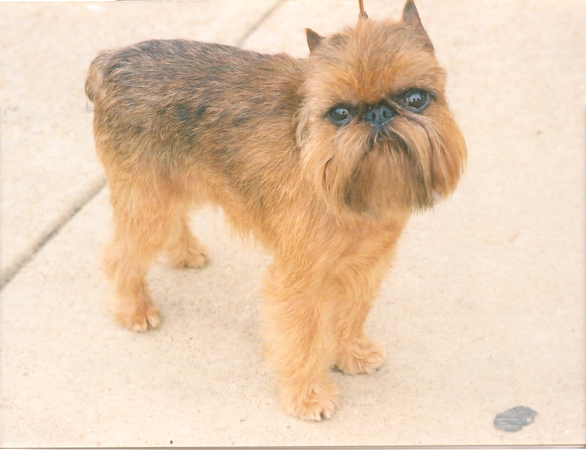

Бельгийский гриффон, брюссельский гриффон, пти-брабансон — породы декоративных собак, выведенные в Бельгии. Происходят от маленькой жесткошёрстной собачки, называвшейся smousje, которая издавна встречалась в окрестностях Брюсселя.
Шерсть:
- Брюссельский и бельгийский гриффоны - жесткошёрстные собаки с подшёрстком. Их шерсть жёсткая, немного волнистая. У этих разновидностей есть усы и борода, покрывающие морду и скулы густой шерсть, более длинной чем на других частях тела. Над глазами шерсть наиболее длинная шерсть, она формирует брови.
- Пти-барбасон - это короткошерстные собаки с жёсткой, прямой и блестящей шерстью.
Окрас:
- Брюссельский гриффон может быть рыжим с чёрной маской.
Бельгийский гриффон чёрный или чёрно-подпалый. - Пти-барбасон может быть рыжим, чёрным и чёрно подпалим. У рыжих собак может быть маска.